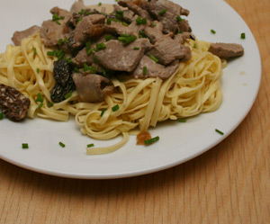

Kalbsgeschnetzeltes an Morchelrahmsauce
5,5 von 6Eine Scharlotte und ca. 25 Gramm getrocknete Morcheln (15 min. in Wasser eingelegt) in etwas Butter anziehen. Mit 2 DL Weisswein ablöschen und auf 5 El einkochen. 2 DL Kalbsfond dazu geben und ebenfalls reduzieren. Mit Thymian, Salz und Pfeffer würzen und mit 4 DL Rahm aufgiessen, abschmecken und noch weitere 15 einkochen. In einer Gusseisenpfanne Butter erhitzen und 500 g Kalbsfleisch ganz kurz braten, zur Sauce geben und mit "Nüdeli" servieren.
